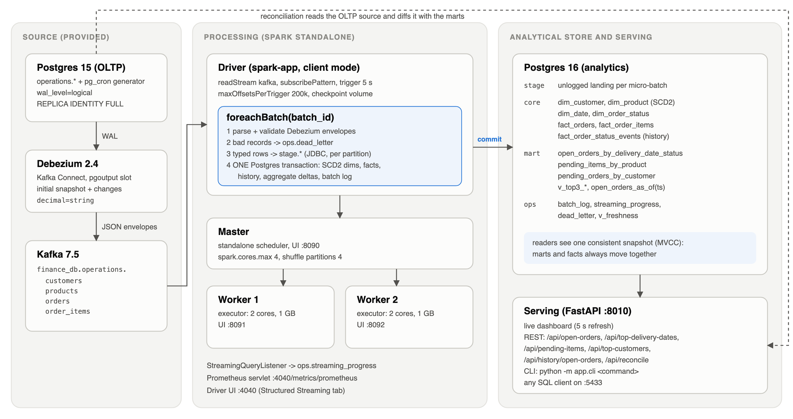
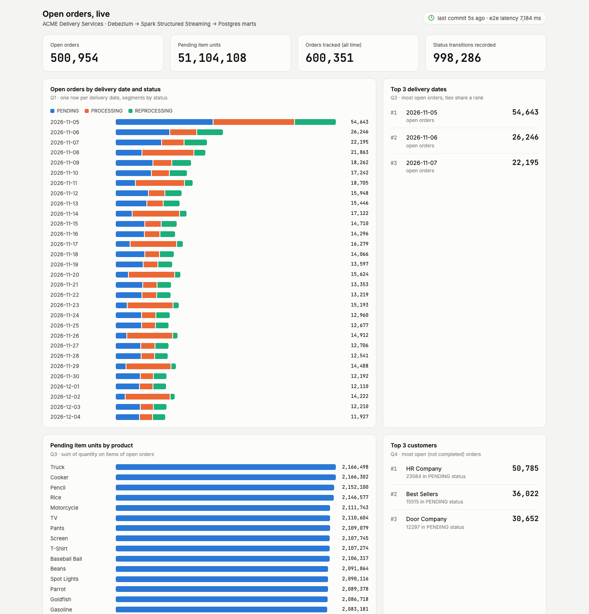
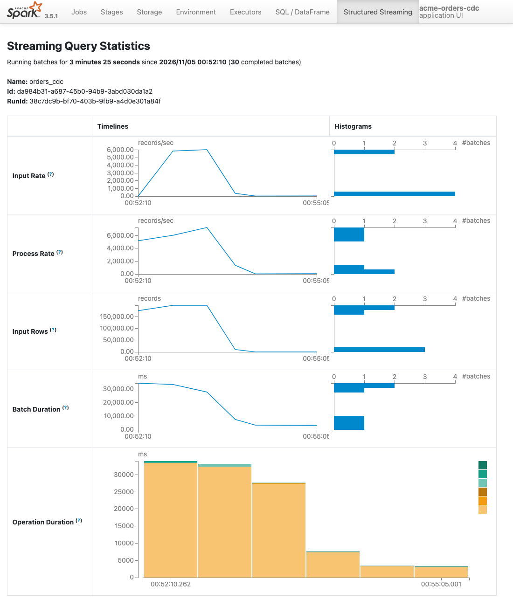

A Spark Structured Streaming pipeline from Debezium CDC to a dimensional model, with the four logistics metrics maintained incrementally and served live.
Leonardo Mariano · November 2026
Debezium snapshot and change stream land in one model: latest state in the facts, every status transition in a history fact, every customer and product version in SCD2 dimensions.
Date, status, customer and product dimensions; order and order-line facts; a transactional status-history fact; one mart table per question.
5 s trigger. Measured source-commit to mart-commit latency: 7.9 s average, 9.7 s p95 in steady state.
Open orders by delivery date and status
Top 3 delivery dates with more open orders
Open pending items by product
Top 3 customers with more pending orders

Debezium envelope per topic. Row image is after, or before for deletes. Bad records go to ops.dead_letter with the raw payload.
Typed rows into unlogged stage.* tables over JDBC, in parallel from the executors. All versions kept.
SCD2 dimensions, version-guarded fact upserts, status history, aggregate deltas and the batch log commit together.
A batch carries every change committed in the interval, across tables. An order and its items move together.
The join with history happens against the persisted model. No state store, watermark or stream-stream join; history survives Kafka retention and checkpoint loss.
Readers get a consistent MVCC snapshot: an aggregate never disagrees with the facts behind it.
| Table | Grain | Role |
|---|---|---|
| core.dim_date | day | calendar attributes for delivery and order dates |
| core.dim_order_status | status | carries the business rule is_open |
| core.dim_customer, dim_product | version (SCD2) | valid_from / valid_to / is_current; keeps price and address history |
| core.fact_orders | order, latest state | accumulating snapshot with date keys |
| core.fact_order_items | order line, latest state | source column quanity fixed to quantity |
| core.fact_order_status_events | status transition | the history; powers open_orders_as_of(ts) and order timelines |
| mart.* (3 tables + views) | delivery date x status, product, customer | Q1 to Q4, maintained by deltas; top 3 uses RANK so ties are visible |
| ops.* | batch, progress event, bad record | batch log with latency, Spark progress, dead letters, freshness view |
Fact upserts only win when (source_lsn, kafka_offset) is newer. Replays and late events are no-ops.
Before and after state are read inside the same transaction. A replayed batch changes nothing, so its delta is zero.
One status event per Kafka offset (ON CONFLICT DO NOTHING). SCD2 versions unique per key, LSN and offset.
Proven, not assumed: the driver was killed in the middle of a 900k-event batch. The query restarted from the checkpoint, re-ran the same offsets, and the reconciliation matched the source on the first attempt with zero duplicate history rows.

Refreshes every 5 s, with a freshness indicator: seconds since the last commit and end-to-end latency.
/api/open-orders
/api/top-delivery-dates
/api/pending-items
/api/top-customers
/api/history/open-orders?as_of=
/api/reconcile
python -m app.cli top-dates and views like mart.v_top3_customers
| 2026-11-05 | 54,631 |
| 2026-11-06 | 26,238 |
| 2026-11-07 | 22,188 |
| HR Company | 50,772 |
| Best Sellers | 36,016 |
| Door Company | 30,644 |
| Truck | 2,165,806 |
| Cooker | 2,165,650 |
| Pencil | 2,151,601 |
Reconciled against the source. Every key of the three aggregates (90 delivery date x status, 27 products, 18 customers) equals the same metric computed directly on the OLTP database.
| Variable | Observed | Decision |
|---|---|---|
| Source parallelism | 4 topics x 1 partition | 4 cores (2 executors x 2), shuffle partitions 4 instead of 200 |
| Event rate | ~12 events/s steady, bursts of 1.6M | maxOffsetsPerTrigger = 200k as backpressure |
| Event size | 0.5 to 0.8 KB JSON | 200k events ~150 MB cached: 1 GB executors with headroom |
| Latency target | seconds | 5 s processing-time trigger |
| State | none in Spark | memory does not grow with keys or history |
| Sink | 99% of batch time in addBatch | scale the sink first; more Spark cores alone would not help |
Production rule of thumb: about 2.3k events/s per core with this sink. For a peak of R events/s plan R / 2300 x 2 cores, and at least as many Kafka partitions as cores, keyed by primary key.
average under load, 12.4k max
time is in the sink, not in Kafka reads
JDBC staging is the first target
p95 9.7 s; 1.6M burst drained in ~3 min
Collected by a StreamingQueryListener into ops.streaming_progress, by the job into ops.batch_log, and exposed on :4040/metrics/prometheus.

The generator attaches items to the customer's first order of the day (LIMIT 1, no status filter). Orders created later, the ones that stay open, have no items, so Q3 is correct but nearly empty. Reconciliation confirms the source shows the same.
Orders from previous days are never updated again, so they stay open forever. In production this is a stale-order alert.
unity_price would arrive as a base64 struct. The connector now emits decimals as strings: lossless and simple to cast.
order_items.quanity in the DDL versus quantity in the diagram. Mapped explicitly and fixed in the model.
COPY instead of JDBC inserts, one Spark pass for batch statistics